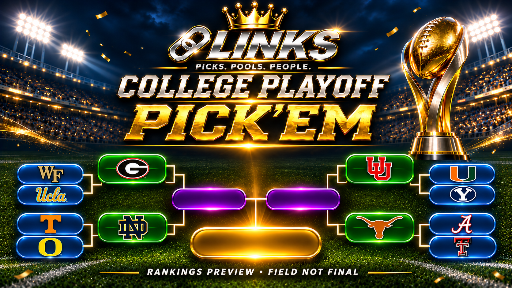

College Playoff Pick'em

Selection show starts December 6 at 11 a.m. Central. Teams are confirmed during the show.
Official Selection Day scheduleJoin the LINKS playoff challenge
Free to join with your LINKS account. Joining unlocks picks automatically. Compete on one shared leaderboard.
Join LINKS-hosted event Create your own poolLoading team standings...
Demo: fictional matchups and results. No picks enter a real pool.
Loading the playoff schedule...